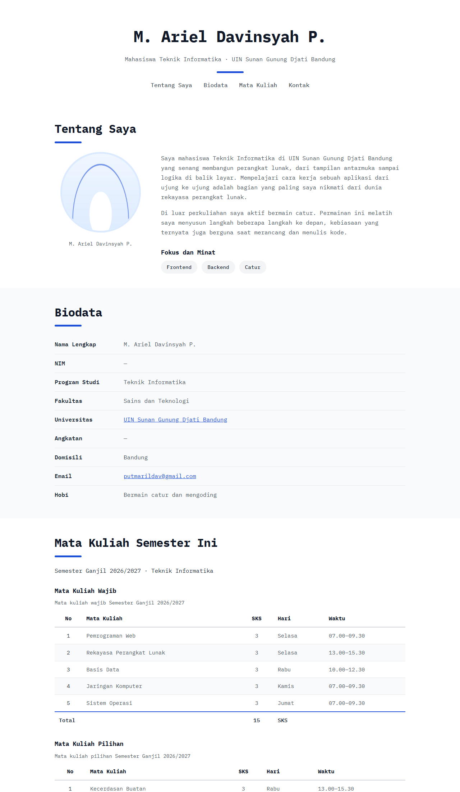
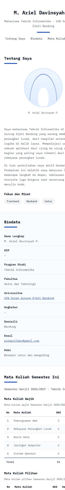
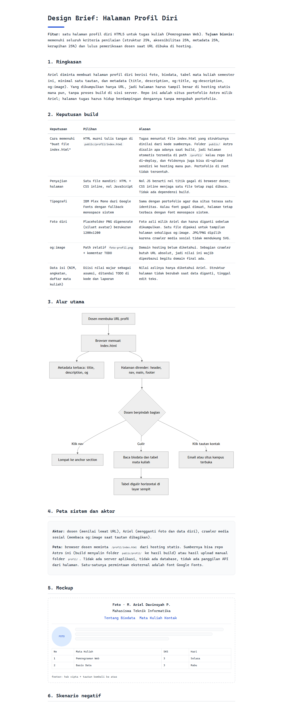

Halaman profil diri untuk tugas HTML5 sudah dibuat dan diverifikasi di browser sungguhan.
Semua ketentuan tugas (struktur semantik, aksesibilitas, metadata, foto, tabel mata kuliah, tautan)
terpenuhi di file public/profil/index.html.
python3 -m http.server port 8123, diakses dengan Chrome headless (Windows)public/profil/index.html + foto-profil.png (placeholder) + favicon.svgCatatan alat: MCP chrome-devtools tidak tersedia di sesi ini dan Playwright tidak terpasang di lingkungan, jadi verifikasi memakai Chrome headless dengan screenshot nyata. Klik manual beruntun (misal mengklik menu satu per satu) tidak dijalankan; hal yang bergantung klik ditandai "belum diuji langsung" di matriks di bawah.
| Skenario | Aksi | Expected | Hasil aktual | Cara verifikasi |
|---|---|---|---|---|
| Muat halaman (happy) | Buka /profil/ |
Semua bagian ter-render: header, nav, 4 section, footer | Sesuai | Screenshot desktop; console Chrome nol pesan error |
| Aset termuat (happy) | Browser memuat foto, favicon, font | Semua aset 200 | 200 semua (foto image/png, favicon image/svg+xml, font CDN 200) | curl per aset + screenshot |
| Navigasi anchor (happy) | Klik menu nav / tautan "Kembali ke atas" | Lompat ke section yang dituju | Konsisten kelima anchor punya id tujuan; klik manual belum diuji langsung | grep pasangan href="#..." dan id="..." |
| Tabel mata kuliah (happy) | Baca section Mata Kuliah | Dua tabel dengan caption, header ber-scope, total SKS di tfoot | Sesuai, total 15 SKS wajib + 5 SKS pilihan | Screenshot desktop |
| Tautan eksternal (happy) | Klik tautan kampus dan email | Situs kampus terbuka di tab baru; email membuka klien mail | uinsgd.ac.id 200; mailto belum diuji (butuh klien mail) | curl -I ke situs kampus |
| Layar 375px (edge) | Buka di lebar 375px | Satu kolom, tanpa scroll horizontal halaman, tabel digulir di wadahnya | Sesuai, foto pindah ke atas, nav melipat dua baris | Screenshot ponsel |
| JavaScript dimatikan (negatif) | Matikan JS lalu muat halaman | Halaman berfungsi penuh | Berlaku pasti: halaman memang tidak memuat satu pun script | Pemeriksaan isi file (tidak ada tag script) |
| Font gagal dimuat (negatif) | Blokir fonts.googleapis.com | Fallback font monospace sistem dipakai | Belum diuji langsung; fallback stack sudah ada di CSS | Pemeriksaan kode font-family |
| Foto hilang (edge) | Hapus foto lalu muat | Alt text tampil, layout tidak kolaps | Belum diuji langsung; alt deskriptif dan dimensi eksplisit sudah dipasang | Pemeriksaan atribut img |



docs/halaman-profil/index.html: ter-render penuh, diagram Mermaid jadi.Halaman baru, belum ada riwayat bug yang pernah di-fixed pada halaman ini: render pertama di Chrome langsung bersih (console nol pesan error, semua aset 200). Kalau nanti muncul bug, catat di sini dengan pola: pemicu, gejala, akar masalah, perilaku setelah perbaikan, cara mereproduksi.
| Ketentuan tugas | Status | Bukti |
|---|---|---|
File index.html | Ada | public/profil/index.html |
| Struktur HTML5 benar | Ada | DOCTYPE, lang, charset, viewport; view-source rapi |
| Elemen semantik header, nav, main, section, footer | Semua dipakai | Plus figure, figcaption, address, dl |
| Foto diri dengan alt | Ada (placeholder) | foto-profil.png + alt deskriptif; foto asli menunggu Ariel |
| Biodata singkat | Ada | Section Tentang + dl Biodata |
| Heading h1, h2, h3 | Semua dipakai | Satu h1, empat h2, tiga h3 |
| Tabel mata kuliah semester ini | Ada | Dua tabel wajib dan pilihan + total SKS |
| Minimal 1 link | Ada | Mailto, situs kampus, anchor nav (lebih dari satu) |
| Metadata title | Ada | Tag title terisi |
| Metadata description | Ada | Meta description terisi |
| Metadata og:title | Ada | Meta property og:title |
| Metadata og:description | Ada | Meta property og:description |
| Metadata og:image | Ada (absolut) | https://ariel-chi.vercel.app/profil/foto-profil.png |
foto-profil.png dengan foto asli (nama file tetap sama)https://ariel-chi.vercel.app/profil/ ke LMS